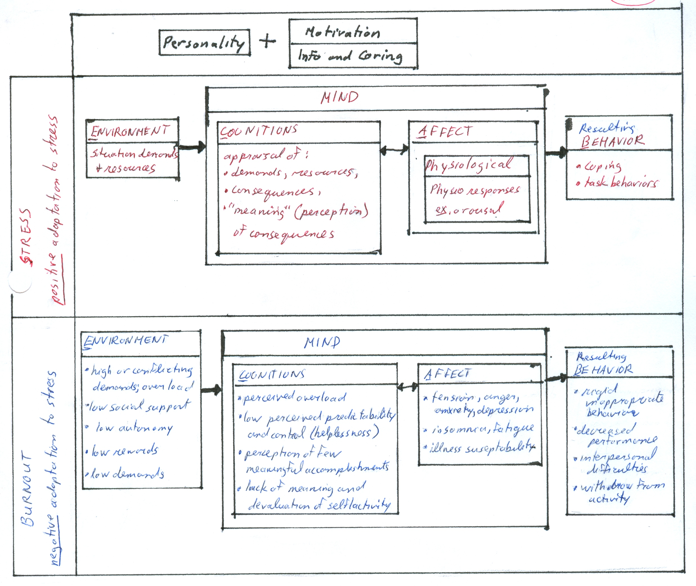
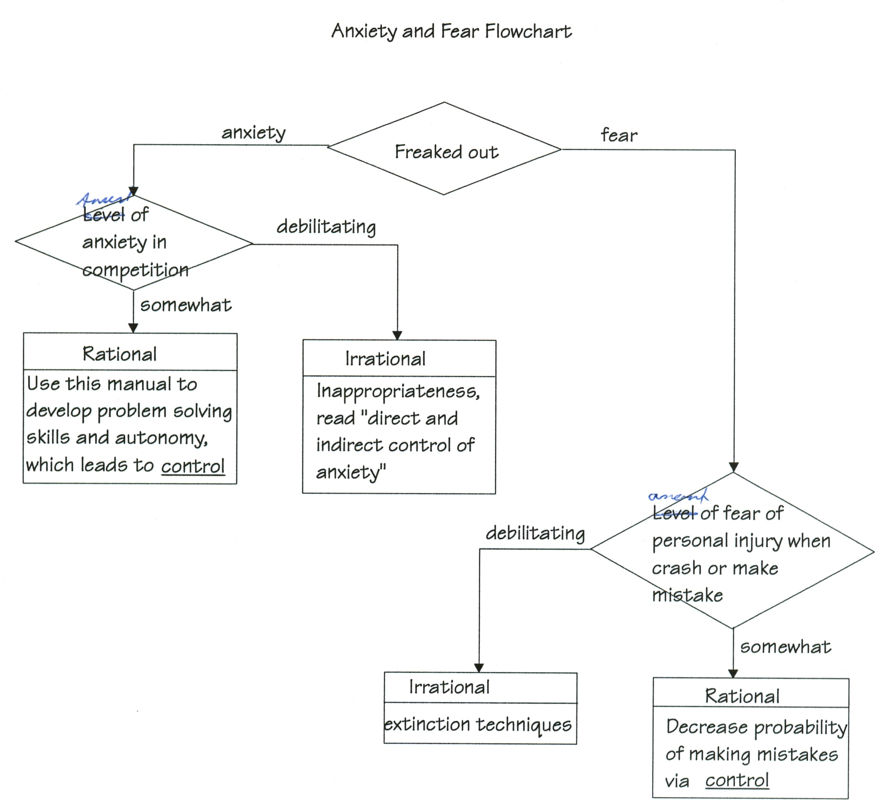

|
ch11 Self-Directed Coaching Manual
ch 11) Intervention Methods for Emotions
The following are intervention techniques that are most often used in sports. This is only a listing of definitions and techniques. Details of application methodology are beyond scope of this manual. Athletes’ can use this as general understanding of techniques and services available to them. It is recommended that the athlete consult a qualified professional for application for self, or do own follow-up research at a reputable university. The key to intervention is to develop control. In sport, the following often happens: STRESS + NO COPING -> ANXIETY, TRAINING STRESS SYNDROME, INJURIES FEAR + NO CONTROL -> ANXIETY
CONTROL OF PHYSIOLOGICAL AROUSAL Professional western approaches that control physiological arousal, include progressive relaxation, meditation, biofeedback, autogenic training, autohypnosis. Consult a qualified professional for application for yourself, or do your own research at a reputable university. In general, some common quick applications of arousal interventions commonly used by athletes. To relax muscles, we tighten muscle group we want relaxed, and then loosen. In theory, the more powerful we tighten a muscle group, the more it will relax when we are done. To get aroused and increase adrenaline, we can increase our heart rate by jumping up and down. To get oxygen to your muscles, hyperventilate. To slow heart down, we hold our breath.
CONTROL OF STRESS Aaaaa!! A little bit of stress, from time to time is very good. It encourages us to move and try. However, some stressors stay unresolved or accumulate over time. These stressors can be big or small, but at the same point we have had enough. The next stressor, even a small one, will destroy us. It is often called “last straw effect”. We can control stress with coping strategies. For athletes, the biggest concerns are negative training stress and injury, which are often caused by stress. Sometimes called “training stress syndrome”, TSS, is the negative adaptation to training stress. A positive adaptation to training stress, leads to training gain. A negative adaptation to training stress, starts with lag in training gain, then staleness or slump, then overtraining or work ethic problems, then burnout, and finally withdrawal from sport activity altogether. negative adaptation -> lag in training gain -> staleness/slump -> overtrainning or work ethic problems -> burnout -> withdrawal The chart“Positive and Negative Adaptations to Stress”, figure 11-1, I’ve charted stressors with the ABCE framework, and motivational principles, which I discussed in the goal setting section. It compares the environment conditions, the cognitive (mind) and affective (emotional) aspects of ourselves to the resulting behaviour. In this case I’ve charted a positive stress response, leading to training gain, versus a negative stress response, which eventually can lead to burnout and withdrawal. This is another “big picture” that is good to review from time to time to make sure we are on the right track overall. The other thing that seems to go hand in hand with athletes, is stress and injury. The best way to avoid injury is to take a quick inventory of our bodies, every day, and right before a sport activity. Our body physiology, power, metabolism, naturally oscillate up and down in a sinuous fashion. All things equal, our bodies will sometimes feel super powerful, as if we can jump over buildings, and sometimes, our bodies feel sluggish, as if they weigh 300 pounds. So when we are cognizant of our natural biorhythms, and adjust the amount of power at the top end that we exert, we decrease risk of injury. Our mind abilities also fluctuate, and our body limbs also vary in power and flexibility. While training we train considering our power abilities for the day. For competition, if we are well rehearsed, we can usually go just a bit over our safety limit. A good method to check our bodies, is to think of each part and check how it feels. Start at the bottom with feet, and work up to head. Course conditions, and tournament environments also can change. Again, we take inventory of the situation, and only do what we are comfortable doing. The “do or die” attitude still happens amongst some professional athletic organizations, but in the end, the overuse, or overpowering of activity, will lead to injury. We may get ostracized for being appropriately cautious, but in the end we are injury free, and the other guy is not. We can’t be the best with injury. Figure 11-1: Positive and Negative Adaptations to Stress 
CONTROL OF ANXIETY Anxiety can be rational or irrational. Fear can be rational or irrational. The diagram “Anxiety and Fear flowchart”, figure 11-2, may help determine and categorize our experience and intervention requirements, if any. We can decide what to do by asking the following questions in order. Is there something wrong? Is it realistic or not? What should the appropriate intervention be? Specifically, are we experiencing anxiety or fear? Is it realistic and rational or unrealistic and irrational? We need a little fear and anxiety to appreciation of dangers and motivate us to rehearse realistically before attempt made. Realistic fears can happen when we get a personal injury, crash or make a mistake. We may conclude “I love skiing, skiing can kill”, which is realistic. Realistic fear alerts us that something needs to change to make things safer. We can decrease the probability of making a mistake, and hence realistic fear, with the ”control commitment” in goal setting. Realistic anxiety happens when we realize that we have no backup support. No resources to note problems and solve them. We may conclude “I’m pretty well on own.” The best way to deal with this is to improve self-sufficiency. Develop autonomy and problem solving skills. In contrast, irrational reactions are debilitating. Irrational anxiety happens when there is overreaction to competition itself. We can deal with irrational anxiety retroactively using psychological methods like RET. We can use proactive methods like distracting our emotions by concentrating on task itself. This decreases emotional metabolism and increases cognitive metabolism. Irrational fear happens when experience debilitating fear. Psychological retroactive methods like extinction techniques are useful in getting rid of this type of fear. Figure 11-2: Anxiety and Fear Flowchart 
The following are some medical names of interventions for certain conditions. This is to give the athlete an idea of how things are categorized professionally. We can decrease the negative effects of anxiety directly, by getting rid of anxiety. As explained earlier, anxiety can be a result of oversensitization, undersensitization or inappropriateness in response to situations. If we experience oversensitization to some stimuli in environment,and if it is a debilitating unrealistic fear, such as post traumatic stress syndrome or learned fear, then extinction techniques work best. If it is an unrealistic anxiety, such as negative cognitive set, then use cognitive behavioural interventions such as Becks, RET. If we experience undersensitization refering to being desensitized, having no fear or being defensive, then our solution is to develop realistic perception of the situation, by making an effort to understand, and then develop control of the situation. If we experience inappropriateness, refering to inappropriate cognitive sets and anxiety response patterns, which are meaningful to anxiety, but meaningless to the real world, then our solution is cognitive behaviour intervention, RET. We can decrease negative effects of anxiety indirectly, by ignoring anxiety. This method decreases negative effects of anxiety by focussing on the task instead of focusing on the anxiety itself. By focusing on the anxiety, we may be re-enforcing the anxiety. By not focusing on anxiety, it may start to fade. As a practical example, consider the following. In practice everything we learned and is working properly, but in competition, the emotions are different, there is anxiety, which results in bad performance. Anxiety affects the area of the brain that is firing before and during the competition, so unusual messages are sent to spinal cord, resulting in bad performance. Our solution is to use a task-orientated approach, which decreases anxiety by proper priming of controlled default mode, and then stimulus control is used during the competition. Also, we can use attention strategies for appropriate responses, as described in this manual. It is important to acknowledge and accept the fact that a tournament is different than training. When we become anxious during tournament, we can cue ourselves to distract this cognition by reviewing previously created retrieval cues.
DECIDING APPROPRIATE INTERVENTION Intervention occurs at both the micro and the macro level. At the micro level, athletes may consider the “Anxiety and Fear flowchart”, figure 11-2, to guide them through their personal experiences. At the macro level, use the chart “Partial List of Interventions Using ABCE Framework”, figure 11-3, to get started. Figure 11-3: Partial List of Interventions Using ABCE Framework Partial List of Interventions Using ABCE Framework Type A therapies (Affect - emotional. perceptual, physiological interventions)Arousal control techniques Progressive relaxation Meditation Biofeedback Autogenic training Autohypnosis Type C therapies (Cognitive Interventions) Planning Goal setting (ABCE, baby steps, monitoring...) Anxiety interventions Cognitive restructuring Thought stopping Centering Confidence training Strategies for learning and retrieval Priming (developing retrieval cues, imagery...) Attentional strategies Type B therapies (Behavioral interventions) -changing what you explicitly do (not what you think, feel) -usu. involves operant/classical conditioning Type E therapies (Environmental interventions) Sport specific Equipment Physical (fitness, injury) Social Team dynamics, cohesion and leadership Game demands/rules norms/counternorms Social effects (women, children, racial, family, community...) [end of chapter 11] SDCM home |